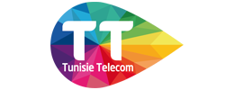
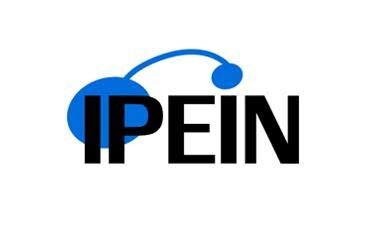

Développement
Langages, back-end et front-end
Bonjour, je suis
Ingénieure en IA & Data Science
Spécialisée en Data Science
Passionnée par l'IA générative, les LLMs et les systèmes multi-agents, je conçois des solutions intelligentes et explicables, de la recherche jusqu'au déploiement.
Un aperçu de mon parcours, de mes centres d'intérêt et de ce qui me motive.
Diplômée ingénieure en informatique de l'ESPRIT (2026), spécialité Data Science, je me passionne pour l'intelligence artificielle appliquée : IA générative, LLMs, RAG et systèmes multi-agents.
Lors de mon PFE de six mois chez VERMEG, éditeur de logiciels FinTech pour la banque et l'assurance, j'ai conçu et déployé LexIQ, une plateforme de conformité AML/KYC qui combine règles métier, RAG agentique et machine learning explicable.
Auparavant, mes stages chez Talan Tunisie et Tunisie Telecom, ainsi que mes projets académiques en NLP, vision par ordinateur et MLOps, m'avaient appris à mener un projet d'IA de bout en bout — des données jusqu'à l'application déployée.
Centres d'intérêt
Les langages, outils et technologies que j'utilise pour concevoir des solutions d'IA — enrichis par mon PFE chez VERMEG.
Langages, back-end et front-end
Modélisation, apprentissage et analyse
LLMs, RAG et agents
ML, deep learning et NLP
Relationnel, NoSQL, graphe, vectoriel, big data
Industrialisation et déploiement
Expertise métier acquise chez VERMEG
Gestion de projet et qualité
Communication professionnelle
Mon projet de fin d'études réalisé chez VERMEG et mes projets académiques en IA, data science et MLOps.
Plateforme de conformité bancaire AML/KYC — neuro-symbolique & multi-agent
Réalisée lors de mon PFE chez VERMEG, LexIQ est une plateforme d'aide à la décision pour la lutte anti-blanchiment, appliquée à la réglementation tunisienne (BCT, CTAF) et aux standards internationaux (GAFI/FATF). Chaque décision est justifiée juridiquement : les règles appliquées sont reliées à leur texte source, avec citation verbatim.
NLP · IA générative
Assistant pour journalistes
Vision par ordinateur · OCR
Extraction de contenu manuscrit médical
Deep learning · Imagerie médicale
Tumeurs cérébrales
MLOps
Prédiction & segmentation du churn client
Trois stages en entreprise, dont un PFE de six mois chez VERMEG.
VERMEG · FinTech, logiciels pour les services financiers
Mission : concevoir et réaliser LexIQ, une plateforme de conformité AML/KYC qui exploite les LLMs et les architectures RAG pour automatiser l'analyse de conformité des transactions financières.
Talan Tunisie

Tunisie TelecomDe la classe préparatoire au diplôme d'ingénieur en Data Science.
École Supérieure Privée d'Ingénierie et de Technologies
Diplôme d'ingénieur — Spécialité Data Science
PFE : LexIQ, chez VERMEG (2026)
Tunis

2021 – 2023Institut Préparatoire aux Études d'Ingénieurs de Nabeul
Cycle préparatoire Physique-Chimie
Concours national d'entrée aux écoles d'ingénieurs
Nabeul
Enseignement secondaire
Baccalauréat en Sciences Expérimentales
Mention Bien
Nabeul
Formations certifiantes suivies auprès de NVIDIA, Amazon Web Services et The Hashgraph Association — certificats consultables et vérifiables en ligne.
Certificat disponible sur demande
Une opportunité professionnelle ou un projet de collaboration en IA et data science ? N'hésitez pas à me contacter, je vous répondrai rapidement.